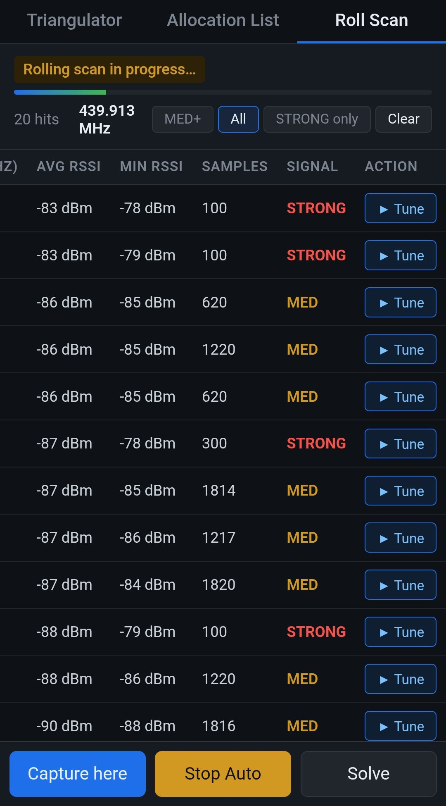

Flipper Zero RF Triangulator
Mhz_Localiser locates Sub-GHz transmitters with a Flipper Zero and an Android phone: live RSSI over USB or Bluetooth LE, Nelder-Mead triangulation, a two-pass CC1101 band scan and an offline spectrum allocation lookup. Open source, MIT.
What it does
- RSSI streaming — the
rf_logger.fapFlipper app samples the CC1101 RSSI register at 5 Hz and streams CSV over USB CDC and Bluetooth LE at the same time. - Triangulation — the Android app logs GPS + RSSI captures; from 3 or more positions a Nelder-Mead least-squares solver on a log-distance path-loss model estimates the transmitter position, with an RMS residual.
- Two-pass band scan — coarse pass over 300–348 / 387–464 / 779–928 MHz (600 kHz steps, peak-hold), fine pass around each hit for centre frequency and occupied width.
- Offline allocation lookup — 2,967 spectrum allocation rows (ITU regions, USA, EU countries, Switzerland/OFCOM) bundled in the app.

How to triangulate a transmitter
1. Enter the frequency on the Flipper (or pick a Roll Scan hit) 2. Check RSSI is above the noise floor 3. Capture GPS + RSSI from 3–6 positions that surround the source 4. Read the estimate and its RMS error; re-capture if RMS is high
Accuracy, honestly
RSSI is not distance. In the project's field tests the RMS error ranged from 13–22 m in open field to 95–130 m in dense urban streets; indoors results were unstable. This is not direction finding and not suitable for tracking a moving transmitter. Full numbers and caveats are in the field validation and limitations sections.
Requirements
| Component | Requirement |
|---|---|
| Flipper Zero | Firmware 0.97+ (official or Unleashed) |
| Android | 8.0+, USB OTG or Bluetooth LE |
| Link | USB-C cable or Bluetooth LE |
Legal use
Receive-only analysis intended for education, your own equipment and authorized assessments. Read ETHICS.md before use.